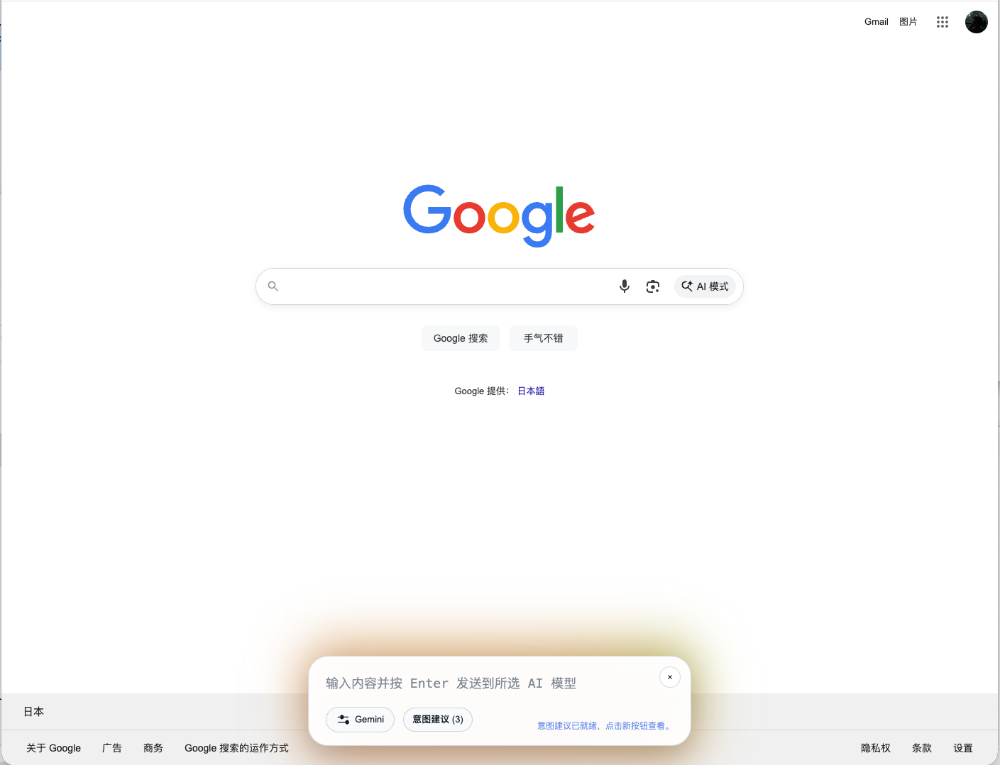

用 Ctrl + R 直接把想法送进模型
- 任意页面即时唤起，保持思维连续性。
- 支持快捷发送、意图预测、自动补全。
- 把“想法”变成“执行动作”，少一次切换就是快一倍。
Right AI 2.0 · Browser Intelligence Hub
你的浏览器不该只是“看网页”，而应成为“完成任务”的核心界面。Right AI 把 Quick Input、Multi-Model Split View、Webpage Agent 和自动化工具融合在一个流畅界面里。
Feature System
不再在插件、标签页、工具站点之间跳转。Right AI 把最常用的智能操作整合为可视化可交互模块。

Workflow Engine
在任何网页按下 Ctrl + R，输入任务目标，Right AI 自动捕获上下文。
系统按任务类型自动分配模型，支持并行比对与结果融合。
在侧栏实时生成摘要、行动清单、改写版本与下一步建议。
直接把结论用于写作、调研、协作，形成可持续的闭环流程。
Interactive Scenarios
在行业报道页面直接提炼关键信号，自动生成结构化洞察与风险提示。
网页总结 · 对比分析把用户反馈、竞品信息、文案素材即时拼接成可执行运营策略。
多模型协同 · 快速迭代复杂概念自动转译为可理解步骤，结合翻译与问答持续追问直到吃透。
深度阅读 · 智能追问Get Started
FAQ
推荐最新版 Chrome。基于 Chromium 的 Edge 等浏览器通常也可正常运行。
安装后即可使用核心能力。部分模型服务可能需要你在扩展内配置自己的 API 信息。
默认推荐快捷键是 Ctrl + R。你也可以在扩展设置里自定义快捷键。
下载 files/dist.zip，解压后在 chrome://extensions 开启开发者模式并选择“加载已解压的扩展程序”。